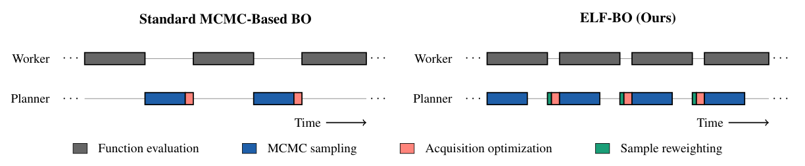
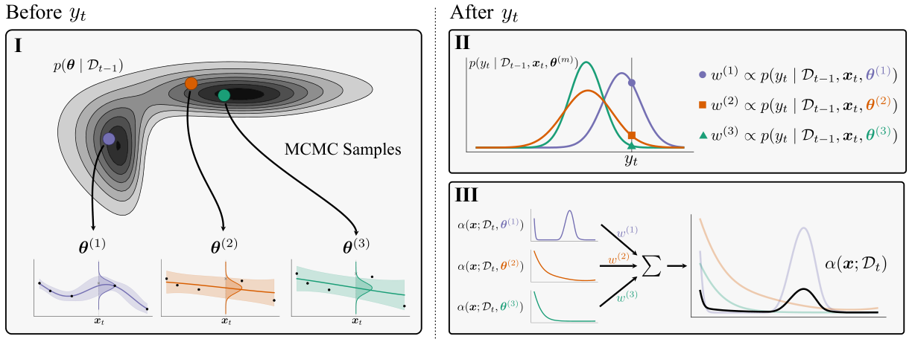
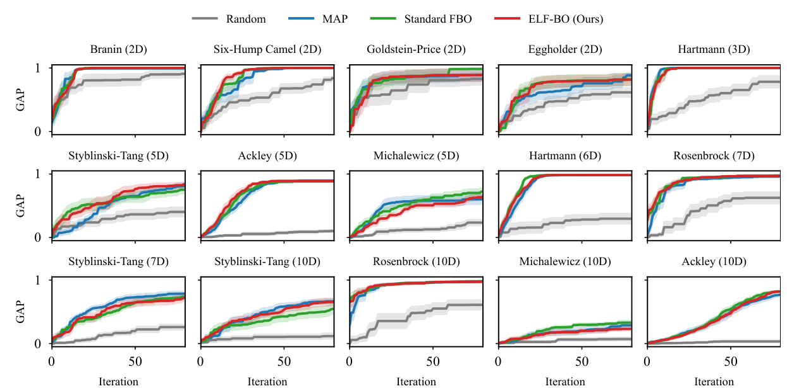
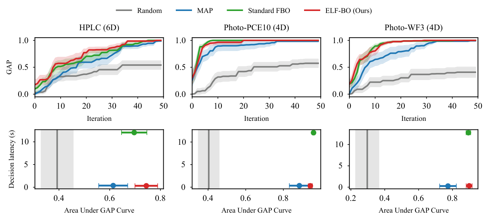
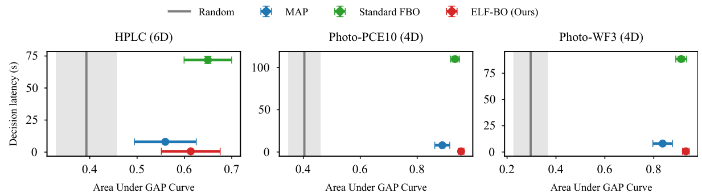
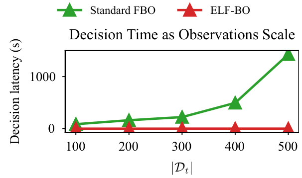
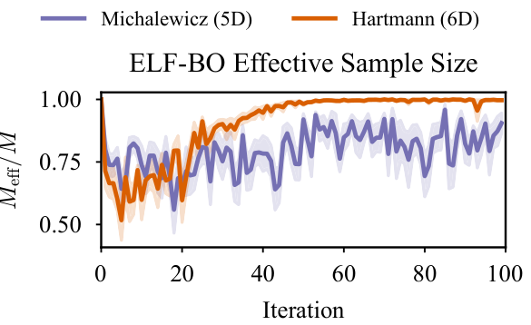

ELF-BO：利用实验等待时间，让完全贝叶斯优化变得实用
论文原文 ↗Gustavo Sutter、Alejandro Comas-Leon 等，Work While They Sleep: Exploiting Evaluation Latency for Fully Bayesian Optimization，arXiv，2026。论文页面 ·
一次实验或昂贵模拟正在运行时，优化程序通常等待结果；结果返回后，仪器又要等待程序完成计算、决定下一组条件。ELF-BO 利用第一段等待时间提前完成昂贵抽样，在新观测到来后快速更新建议。它要实现的是完全贝叶斯优化的样本效率，同时把结果返回后的决策延迟降到常规方法的水平。
方法怎么做：先抽取可能模型，再用新观测重加权
贝叶斯优化根据已有“条件—结果”建立便宜的预测模型，综合预计收益和不确定性选择下一次实验。本文使用高斯过程，它为不同条件下的结果给出联合概率分布。这个分布还依赖长度尺度、整体变化幅度和噪声等超参数：它们决定模型倾向于相信怎样的函数形状。
标准方法以最大后验等规则选择一组超参数。完全贝叶斯方法则保留多个可能模型，通过 MCMC 从数据支持的超参数分布中抽样，再平均这些模型对候选的判断。小数据时，多种参数都可能解释现有结果，这种模型平均能够更充分地表达不确定性。计算代价主要来自新数据到达后的重新抽样。

原图 1：灰色实验运行与蓝色参数抽样重叠。实验结束后，只需绿色的权重更新和红色的下一点选择。
ELF-BO 在当前实验运行期间，先用已知数据完成参数抽样。新结果返回后，计算每个参数样本对它的预测概率，并据此重新分配权重：更能解释新结果的模型获得较大权重。随后，每个模型纳入新观测、计算候选的预期改进，系统按更新权重合并这些建议并选择下一点。新结果仍参与决策，但昂贵的抽样已经提前完成。
这里的重加权属于重要性采样：旧后验提供样本，新观测的似然将其调整为新后验所需的相对权重。因而它把“构建参数样本”和“利用刚到达的结果”分成可提前与需等待两部分，使实验和计算能够重叠。

原图 2：左侧模型样本来自旧数据，右上根据新结果调整权重，右下合并更新后的选择函数。
HPLC 任务展示了这条流程的实际对象：输入是六个进样操作条件，目标是增大色谱峰面积。作者以 1,386 条已测实验记录构成可查询候选库，先给少量初始记录，再顺序选择条件、揭示相应结果，重复 50 步。在每次等待期间抽样，得到结果后重加权，再选下一组条件。相同协议也用于两个聚合物混合物光稳定性数据集。
主要结果：保留搜索效果，同时缩短决策等待
首先，15 个合成函数用于检验提前抽样后的搜索表现。作者比较随机搜索、单组参数的 MAP、每次重新抽样的标准完全贝叶斯优化和 ELF-BO。GAP 衡量从初始最好结果向最优结果推进的比例，越高越好；ELF-BO 在多数任务中跟随标准完全贝叶斯方法，表明新观测重加权能够保留其有效搜索行为。

原图 3：各小图对应不同函数。比较红色 ELF-BO 与绿色完全贝叶斯曲线，可以看到两者如何随评估次数接近最优结果。
在 HPLC 和两个光稳定性数据任务中，普通高斯过程核下的 ELF-BO 与标准完全贝叶斯方法取得接近的搜索效果，结果返回后的决策等待时间降低超过 10 倍，接近 MAP 的开销。图中的曲线面积同时奖励尽早找到好条件；因此，较好的搜索成绩与较短等待一起回答了本文的效率问题。

原图 4：上排为逐步找到好条件的过程，下排把搜索曲线面积与决策等待秒数对应；右下方向同时代表较好搜索和较短等待。
模型更复杂时，重叠计算的收益更突出。深度核先用小神经网络转换实验条件，再由高斯过程刻画关系，网络参数也进入贝叶斯抽样。三个实验数据任务中，ELF-BO 的决策等待低于 1 秒，比标准完全贝叶斯方法低约 70–110 倍，同时保持相近搜索效果。

原图 5：深度核增加抽样开销，绿色方法的等待上升，红色 ELF-BO 仍保持较短决策延迟和较高搜索成绩。
随着 Photo-WF3 观测增至 500 条，标准完全贝叶斯方法一次决策约需 24 分钟，ELF-BO 在观测返回后仍低于 3 秒。实验运行时间承载后台抽样，剩余在线步骤主要是重加权与选择。作者还用有效样本量跟踪权重分散程度：较多样本保有权重，意味着模型平均仍由多种参数配置共同贡献。

原图 6：横轴是观测数量，绿色等待时间随数据增长明显增加，红色保持较低水平。

原图 7：有效样本量占比描述更新权重后有多少参数样本继续发挥作用，不同任务的权重分布具有不同特征。
领域贡献：把昂贵评估的延迟变成计算机会
ELF-BO 将完全贝叶斯优化的计算安排到实验和模拟的自然等待期，使更充分的超参数不确定性处理能够服务下一次决策。它保留模型平均带来的搜索表现，用便宜的观测后重加权减少仪器等待，为顺序自动实验和昂贵模拟提供了一种直接可用的规划方式。
附：完整原始摘要中文翻译
黑箱优化问题广泛存在于科学与工程中，往往涉及计算或评估代价高昂的目标函数。这种目标函数评估延迟在优化过程中带来两个后果：（一）目标评估占据执行时间的主要部分；（二）样本效率高的算法对于加快开发、避免浪费资源至关重要。贝叶斯优化（BO）方法事实上已经成为推荐下一个尝试点的规划器的首选。标准 BO 用点估计拟合代理模型的超参数。另一种完全贝叶斯方法通过模型平均来考虑超参数的不确定性，从而得到更好的不确定性估计；这对于 BO 中普遍存在的小数据情形很有用。然而，其计算通常昂贵到难以承受，因此很少被使用。在本工作中，我们提出 ELF-BO：一种利用目标函数评估延迟，提前开始计算下一次建议的算法，使完全贝叶斯优化能够在不产生显著决策阶段开销的情况下运行。具体做法是在目标函数正在接受评估时，从超参数的后验分布中抽样；一旦观测到目标值，只需要重新调整样本权重。在合成函数和真实应用中，我们表明 ELF-BO 能够达到完全贝叶斯方法的性能，同时只产生与标准 BO 相当或更低的决策延迟。因此，ELF-BO 使完全贝叶斯优化在真实应用场景中变得实用。